Paper and writing workshops in Turin and around
Origami, collage, journaling, creative writing, calligraphy, lettering and poetry workshops and courses in Turin, Cuneo and around.
Search all workshops43 activities coming up · updated on 9 November 2026
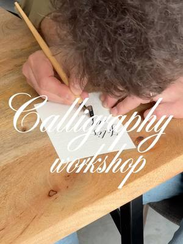
from10novPaper and writingCalligraphy course: three evenings with a nibfrom Tuesday 10 November to Tuesday 24 November, every Tuesday, 19:00–20:30Aurora (TO) · 25 € per lessonwith Noemi Venturino at Velvet Truffle Riot fri13novPaper and writingOrigami workshop: table lampshadeFriday 13 November, 17:00–19:00San Salvario (TO) · 40 €with Origami Pop
fri13novPaper and writingOrigami workshop: table lampshadeFriday 13 November, 17:00–19:00San Salvario (TO) · 40 €with Origami Pop fri13novJewelleryRitagli Preziosi: a collage pendantFriday 13 November, 18:00–20:00Turinwith Punto fatto a mano
fri13novJewelleryRitagli Preziosi: a collage pendantFriday 13 November, 18:00–20:00Turinwith Punto fatto a mano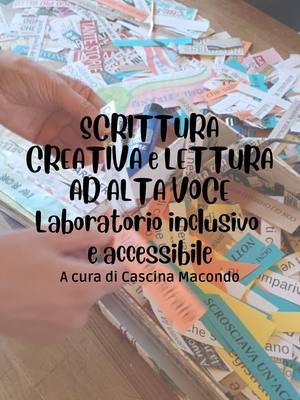
from16octPaper and writingCreative writing: reading and storytellingfrom Friday 16 October to Friday 28 May, every Friday, 18:30–20:00Barriera di Milano (TO) · Freewith Cascina Macondo at Bagni Pubblici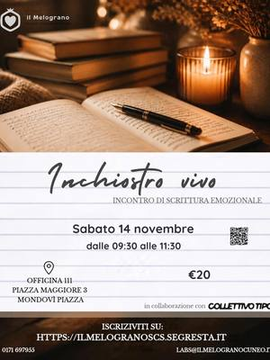
sat14novPaper and writingInchiostro vivo: emotional writingSaturday 14 November, 09:30–11:30Mondovì (CN) · 20 €with Cooperativa Il Melograno sat14novPaper and writingTracing bodies: a collective collageSaturday 14 November, 10:30Turin · Freewith Siria Moschella at Antro
sat14novPaper and writingTracing bodies: a collective collageSaturday 14 November, 10:30Turin · Freewith Siria Moschella at Antro- sat14novPaper and writingCuts and scraps: collage on female taboosSaturday 14 November, 10:30Cenisia (TO)with Barbara Colognese e Serena Soro at Comala
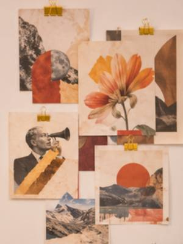
sat14novPaper and writingLet’s Collage: collage and teaSaturday 14 November, 11:00Centro (TO) · 10 €with Monica at Arteaporte sat14novOtherDiscovering the Korean alphabet: your nameSaturday 14 November, 12:00–13:30Aurora (TO)with Spazio Corea at Mercato Centrale Torino
sat14novOtherDiscovering the Korean alphabet: your nameSaturday 14 November, 12:00–13:30Aurora (TO)with Spazio Corea at Mercato Centrale Torino sat14novJewelleryOrigami jewellery: paper earringsSaturday 14 November, 15:00–17:00Santa Rita (TO)with Aland Art Studio at Anima Atelier
sat14novJewelleryOrigami jewellery: paper earringsSaturday 14 November, 15:00–17:00Santa Rita (TO)with Aland Art Studio at Anima Atelier- sat14novJewelleryRitagli Preziosi: a collage broochSaturday 14 November, 15:00–17:00Turinwith Punto fatto a mano
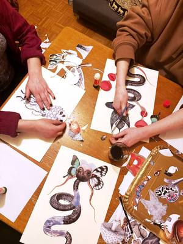
sat14novPaper and writingCollective bestiary: collage workshopfrom Saturday 14 November to Saturday 19 December, 16:30–18:30Aurora (TO) · Pay what you likewith Gabriella Saiello at Cecchi Point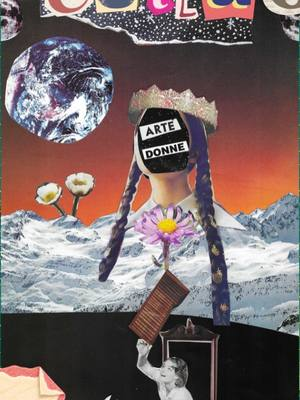
sun15novPaper and writingCollage workshop: a group compositionSunday 15 November, 10:00–12:00Vanchiglia (TO)with Yanañagui at Libreria Sur sun8novFor familiesPaper, folds and wonder: pop-up booksfrom Sunday 8 November to Sunday 29 November, 16:30Quadrilatero (TO) · 5 €with MUSLI
sun8novFor familiesPaper, folds and wonder: pop-up booksfrom Sunday 8 November to Sunday 29 November, 16:30Quadrilatero (TO) · 5 €with MUSLI wed18novPaper and writingPop Collage: cut out and rearrangeWednesday 18 November, 19:00–21:30Aurora (TO) · 35 €with Arianna at Velvet Truffle Riot
wed18novPaper and writingPop Collage: cut out and rearrangeWednesday 18 November, 19:00–21:30Aurora (TO) · 35 €with Arianna at Velvet Truffle Riot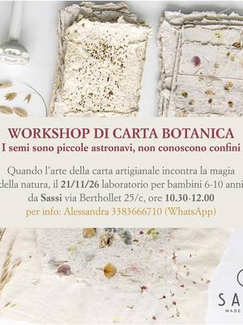
sat21novFor familiesBotanical paper: plantable seed paperSaturday 21 November, 10:30–12:00San Salvario (TO) · 10 €with Claudia Bellin (Camillo quante storie) at Sassi- sat21novJewelleryOrigami jewellery: paper earringsSaturday 21 November, 15:00–17:00Santa Rita (TO)with Aland Art Studio at Anima Atelier
- sat21novPaper and writingOrigami workshop: painted lampshadeSaturday 21 November, 16:00–19:00San Salvario (TO) · 40 €with Origami Pop
 sun22novPaper and writingImaginary bestiary: collage workshopSunday 22 November, 17:00–19:00Vanchiglia (TO) · 25 €with Gabriella Saiello at Spazio Costanza
sun22novPaper and writingImaginary bestiary: collage workshopSunday 22 November, 17:00–19:00Vanchiglia (TO) · 25 €with Gabriella Saiello at Spazio Costanza wed25novPaper and writingStreet collage workshop with Alice ArduinoWednesday 25 November, 17:00–20:00San Donato (TO) · Freewith Alice Arduino at Più SpazioQuattro
wed25novPaper and writingStreet collage workshop with Alice ArduinoWednesday 25 November, 17:00–20:00San Donato (TO) · Freewith Alice Arduino at Più SpazioQuattro- wed25novOtherAppo: poetry meet-upWednesday 25 November, 18:00Vanchiglia (TO) · Freewith Approdo Poetico Torino at Spazio Costanza
- fri27novJewelleryRitagli Preziosi: a collage broochFriday 27 November, 18:00–20:00Turinwith Punto fatto a mano
 sat28novPaper and writingBetween images and words: expressive collageSaturday 28 November, 10:00–12:00Turinwith Soraia Aguirre at Spazio IAIA
sat28novPaper and writingBetween images and words: expressive collageSaturday 28 November, 10:00–12:00Turinwith Soraia Aguirre at Spazio IAIA- sat28novJewelleryRitagli Preziosi: a collage pendantSaturday 28 November, 15:00–17:00Turinwith Punto fatto a mano
 sun29novPaper and writingJournaling: pressed flower stickersSunday 29 November, 09:00–12:30Borgo Po (TO)with Anema e Storie e La Cerca Regali at TObed
sun29novPaper and writingJournaling: pressed flower stickersSunday 29 November, 09:00–12:30Borgo Po (TO)with Anema e Storie e La Cerca Regali at TObed- sun29novPaper and writingOrigami intensive: a framed table lampSunday 29 November, 14:00–19:00San Salvario (TO) · 80 €with Origami Pop
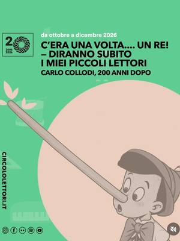
sat5decFor familiesPenne Selvagge: a Christmas storySaturday 5 December, 16:00–17:30Centro (TO) · 10 €with Merende Selvagge at Circolo dei Lettori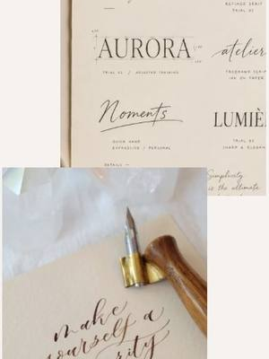
sat19decPaper and writingLettering: beautiful writing for ChristmasSaturday 19 December, 09:30–12:00Cuneo (CN) · 35 €with Barbara Serafino at Atelier Crea-Arti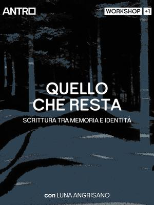
dateto be confirmedPaper and writingWhat remains: writing and memoryDate to be confirmedTurin · Freewith Luna Angrisano at Antro- dateto be confirmedOtherCascina Roccafranca: this season’s coursesDate to be confirmedMirafiori (TO)with Cascina Roccafranca
- dateof your choicePaper and writingCreative wellbeing: breakfast and collageDate of your choiceTurin · 30 €with Kreative Club
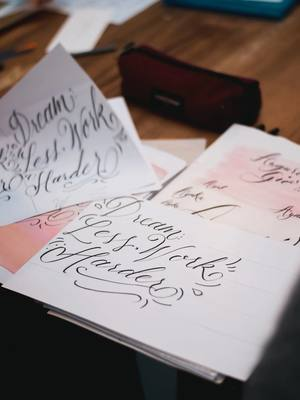
dateof your choicePaper and writingLettering course: creative calligraphyDate of your choiceTurin · 119 € for 6 lessonswith Kreative Club dateof your choicePaintingNovel Academy: drawing and painting coursesDate of your choiceTurinwith Novel Academy
dateof your choicePaintingNovel Academy: drawing and painting coursesDate of your choiceTurinwith Novel Academy dateof your choicePaper and writingCalligraphy course: historical scriptsDate of your choiceCentro (TO)with Enrico Graziano at Polo Le Rosine
dateof your choicePaper and writingCalligraphy course: historical scriptsDate of your choiceCentro (TO)with Enrico Graziano at Polo Le Rosine dateto be confirmedTextilesStrappi e intrecci: journaling and weavingDate to be confirmedCentro (TO)with Marilù Lab at Polo Le Rosine
dateto be confirmedTextilesStrappi e intrecci: journaling and weavingDate to be confirmedCentro (TO)with Marilù Lab at Polo Le Rosine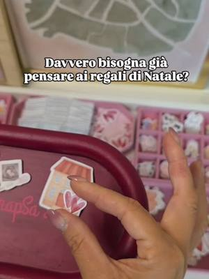
dateof your choicePaper and writingMappaBar: a made-to-measure map giftDate of your choiceSan Paolo (TO)with Scrapsa Lab- dateto be confirmedPaper and writingOrigami workshop: from paper to objectDate to be confirmedSan Mauro Torinese (TO)with Golnaz Esmaeeli at upTOyou
 dateto be confirmedPaper and writingCalligraphy workshop: English roundhandDate to be confirmed, 10:00–18:00Centro (TO)with Enrico Graziano at Polo Le Rosine
dateto be confirmedPaper and writingCalligraphy workshop: English roundhandDate to be confirmed, 10:00–18:00Centro (TO)with Enrico Graziano at Polo Le Rosine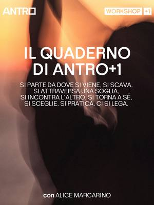
dateto be confirmedPaper and writingThe Antro+1 notebook: creative writingDate to be confirmed, 10:30Turin · Freewith Alice Marcarino at Antro- everyfriPaper and writingWriting for passion: creative writingEvery Friday, 16:00–17:30Vallette (TO) · Pay what you likewith M. Storyteller Lab
- everysatPaper and writingOur best handwriting: a calligraphy lessonEvery Saturday, 16:30Quadrilatero (TO) · 5 €with MUSLI
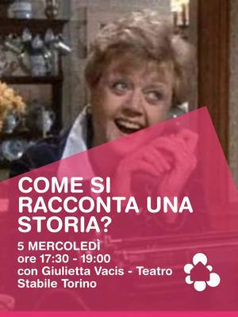
everywedPaper and writingHow to tell a story: creative writingEvery Wednesday, 17:30–19:00Mirafiori (TO) · 50 € for 5 lessonswith Giulietta Vacis at Casa nel Parco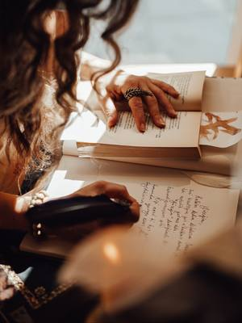
everythuPaper and writingWriting workshop: everyday lifeEvery Thursday, 18:00–20:00Barriera di Milano (TO) · 100 € for 8 sessionswith Bunker